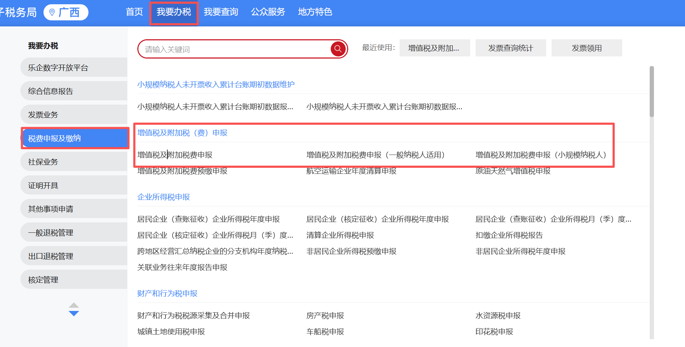
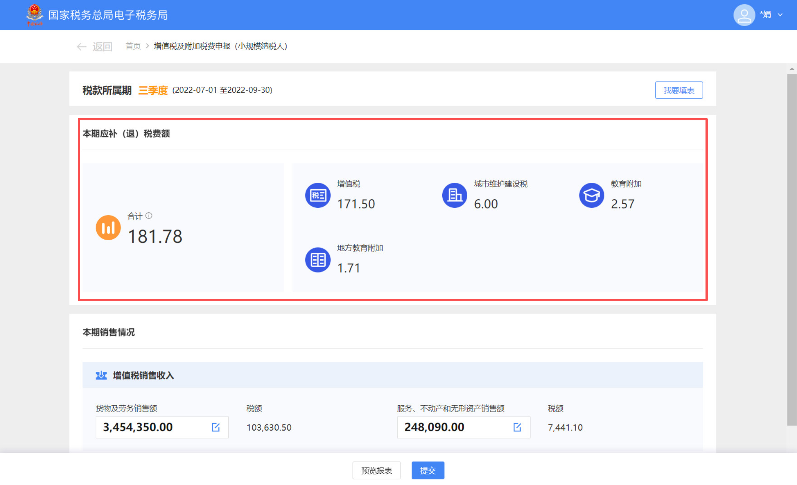
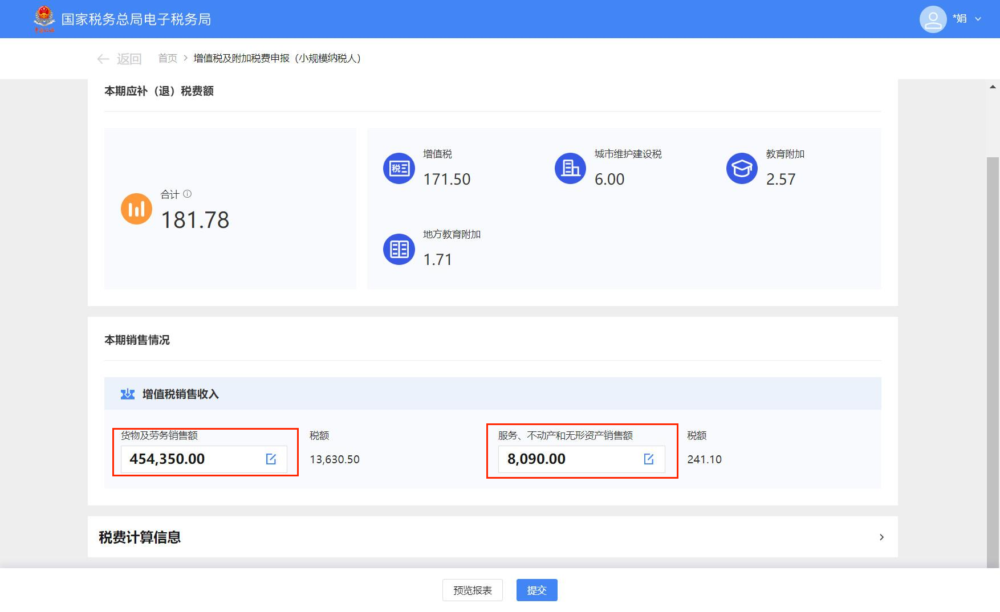
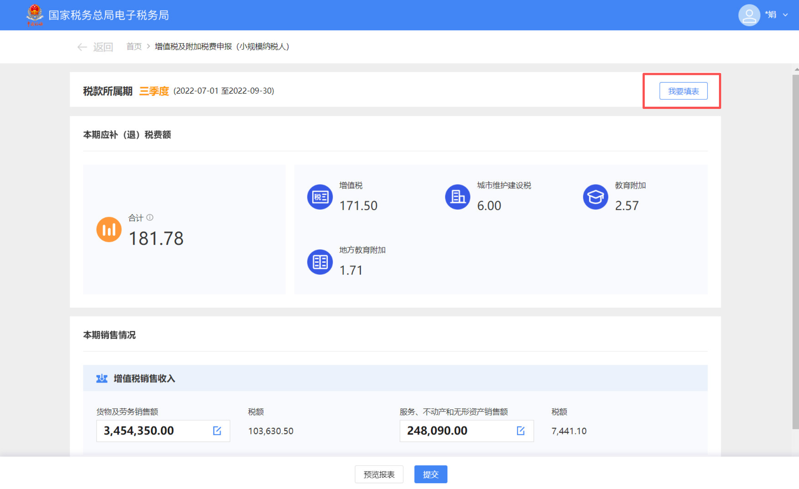
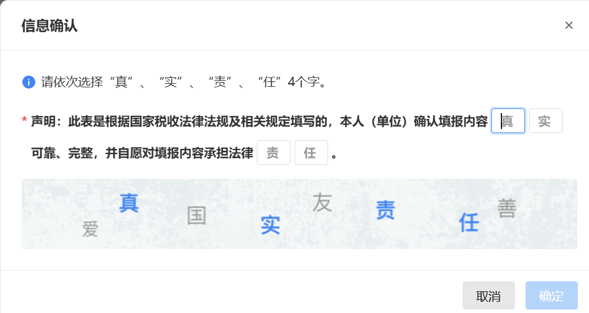
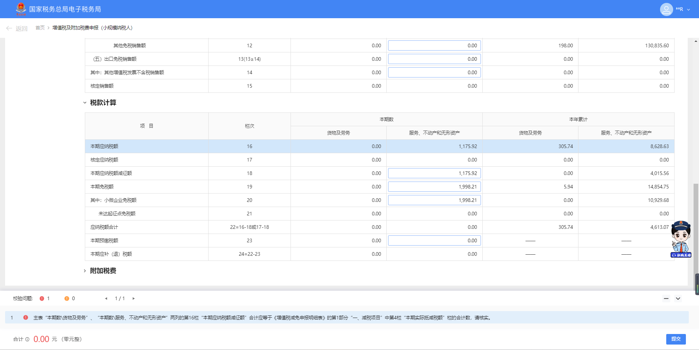
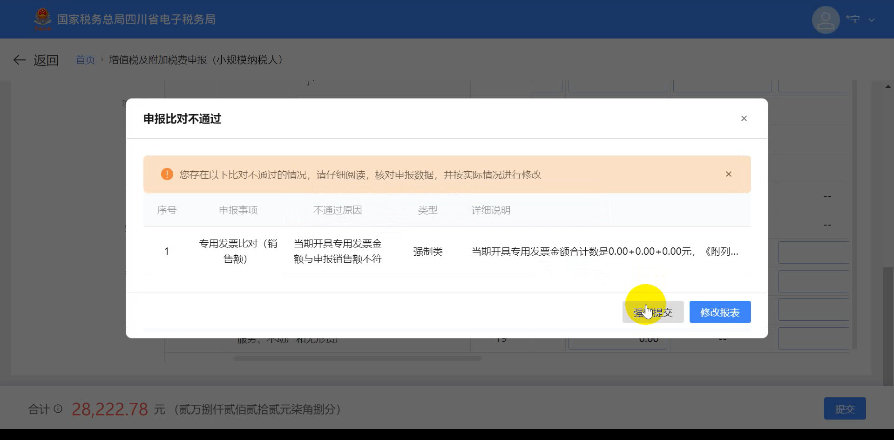
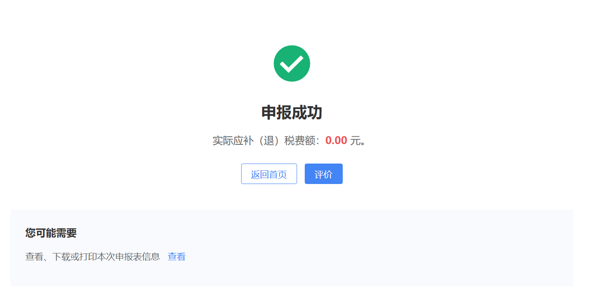

✕
点击空白处或按 ESC 关闭
本指引适用于小规模纳税人（含个体工商户）按期进行增值税及附加税费申报
请按步骤操作，如遇问题请拨打 12366 纳税服务热线
| 项目 | 说明 | 关键时间点/标准 |
|---|---|---|
| 申报期限 | 由主管税务机关核定（通常为按季） | 期终后次月 15 日前 |
| 免税标准 | 小规模纳税人普惠性政策 | 月销售额 ≤ 10 万元 （或季度 ≤ 30 万元） |
| 特殊情况 | 开具增值税专用发票 | 专票部分不可免税，需缴纳税款 |







